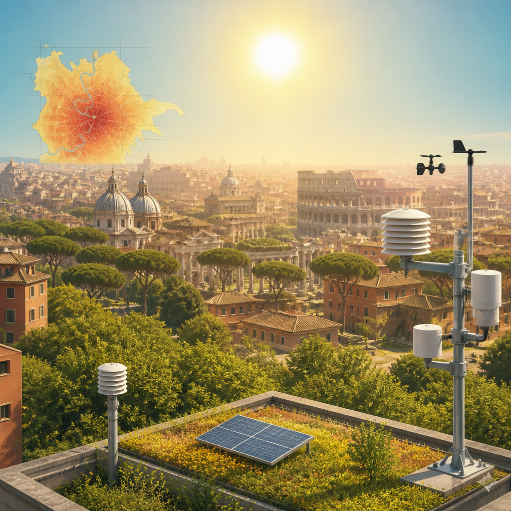
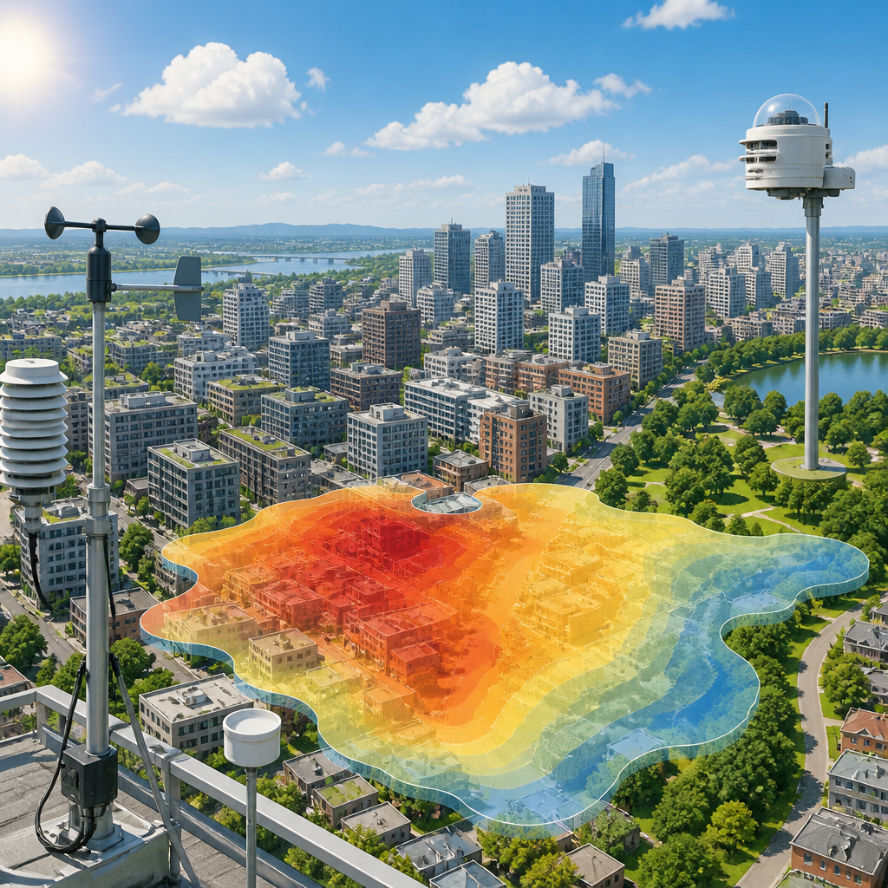

Il secondo Rapporto di monitoraggio climatico del CMCC descrive temperature elevate, notti tropicali e ondate di calore nella capitale.
Il caldo intenso che interessa l’Italia e in particolare le grandi città è un segnale sempre più frequente e misurabile del cambiamento climatico. A Roma, gli effetti non riguardano soltanto la temperatura media: crescono anche gli episodi di calore estremo, le notti in cui il caldo non diminuisce abbastanza e la pressione sui sistemi urbani, dalla salute pubblica alla domanda di energia per il raffrescamento.
A delineare questo quadro è il secondo Rapporto di monitoraggio climatico per Roma, realizzato dal CMCC e presentato insieme al Piano Caldo della città. Il documento analizza il clima urbano con dati ad altissima risoluzione, cioè capaci di restituire informazioni molto dettagliate sul territorio, e fornisce elementi scientifici a supporto della Strategia di adattamento climatico di Roma.
Secondo i dati del CMCC, il 2025 è stato uno degli anni più caldi dal 1991. La temperatura media annuale ha superato la media climatica del periodo 1991-2020. Lo scarto è stato particolarmente marcato in giugno, quando la temperatura media è risultata di circa 4 °C superiore rispetto al riferimento dello stesso mese.
Il dato del 2025 si inserisce in una tendenza che coinvolge diversi anni recenti. Il 2022, il 2023, il 2024 e il 2025 figurano tutti fra i cinque anni più caldi della serie osservata. Per il CMCC, le ondate di calore registrate oggi e negli ultimi anni non vanno quindi lette come eventi eccezionali e isolati, ma come segnali di una trasformazione climatica strutturale che interessa la città da tempo.
Oltre alle temperature medie, il rapporto considera indicatori utili per descrivere il caldo estremo e lo stress termico urbano, cioè il disagio prodotto dalle alte temperature nell’ambiente cittadino. Nel 2025 Roma ha registrato più di 40 giorni estremamente caldi, definiti come giorni con temperatura massima superiore a 35 °C. Per numero di queste giornate, l’anno si colloca al quarto posto dal 1991.
Il 2025 rientra inoltre fra i primi cinque anni della serie storica per numero di ondate di calore, durata dei periodi caldi, gradi giorno di raffrescamento e notti tropicali. I gradi giorno di raffrescamento sono un indicatore collegato al bisogno di raffrescare gli edifici: il loro aumento riflette una maggiore domanda energetica estiva.
Le notti tropicali sono particolarmente rilevanti per comprendere gli effetti del caldo sulla vita quotidiana e sulla salute. Si tratta delle notti in cui la temperatura minima non scende sotto i 20 °C, riducendo il recupero fisiologico dopo una giornata molto calda. A Roma nel 2025 ne sono state registrate 101, contro una media di 76 nel periodo 1991-2020.

Il monitoraggio climatico del CMCC punta a trasformare informazioni dettagliate in strumenti utili per pianificazione, prevenzione e decisioni di soggetti pubblici, privati e della comunità. La piattaforma Roma Climate Hub permette di leggere il cambiamento climatico sul territorio anche a scala di quartiere, attraverso indicatori aggiornati, mappe e scenari. L’obiettivo è individuare le aree più esposte, valutare le priorità di intervento e sostenere l’attuazione della Strategia di adattamento climatico della città.
Fra le priorità indicate dalla strategia figurano l’adattamento dei quartieri all’aumento delle temperature, la gestione dei rischi legati a piogge intense e alluvioni, la sicurezza dell’approvvigionamento idrico e la protezione della costa dagli effetti dell’erosione costiera e dell’innalzamento del livello del mare.
Gli scenari climatici analizzati indicano per Roma un ulteriore incremento delle temperature e degli indicatori di calore. Rispetto al periodo 1991-2020, la temperatura media giornaliera potrebbe aumentare fra 1,2 °C e 1,8 °C, a seconda che si considerino scenari di politiche climatiche più o meno ambiziose.
Nello stesso confronto, le notti tropicali potrebbero crescere da 26 a 36 giorni. Il numero delle ondate di calore estive potrebbe invece aumentare di due volte e mezzo oppure triplicare rispetto al periodo di riferimento. Il rapporto sottolinea così la necessità di affrontare il caldo estremo come parte di un cambiamento strutturale, con strumenti scientifici aggiornati, politiche di adattamento mirate e una comunicazione chiara rivolta a cittadini, istituzioni e decisori.
Nel 2025 Roma ha avuto più di 40 giorni con massime oltre 35 °C e 101 notti tropicali. Il CMCC segnala che gli anni recenti sono fra i più caldi della serie dal 1991 e che gli scenari futuri mostrano un ulteriore aumento del caldo e delle ondate di calore.
Questo articolo l'hai letto sul blog di Meteo News Radar: un'app che ti mostra da dove vengono i numeri, invece di limitarsi a dartelo. E ogni mattina ne trovi uno nuovo come questo.